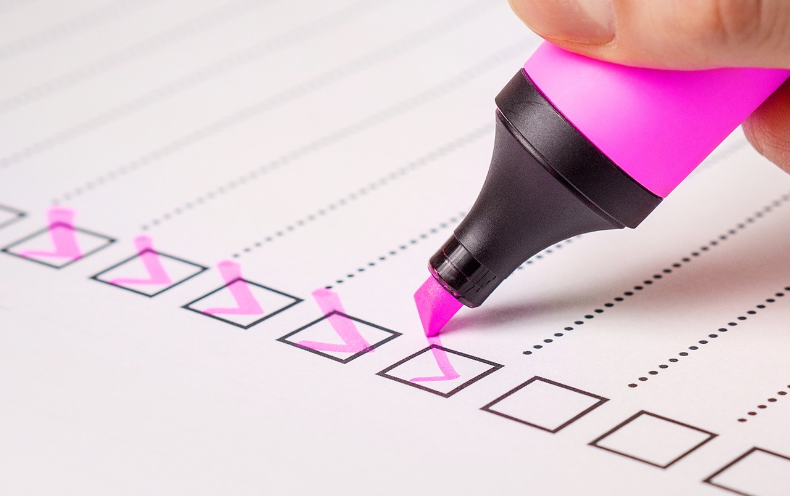

Perfil Do Aluno
Código de sala: ABCDF2
Realizar pergunta

Responder questionario
Sobre o Projeto
É um sistema que tem como seu principal objetivo apoiar todo o processo de interação que envolva a transmissão de conhecimento; Por palestrantes, seminaristas, professores. Para um ouvinte seja aluno, ouvinte da palestra ou seminário.
O Grupo
O grupo que desenvolveu esse trabalho é formado pelos alunos Vagner Gonçalves Vieria e Pedro Augusto Teixeira Alunos da instituição Centro de Ensino Superior de Juiz De Fora, para a disciplina de projetos 1
© Vagner Gonçalves Vieira. Todos os Direitos Reservados.